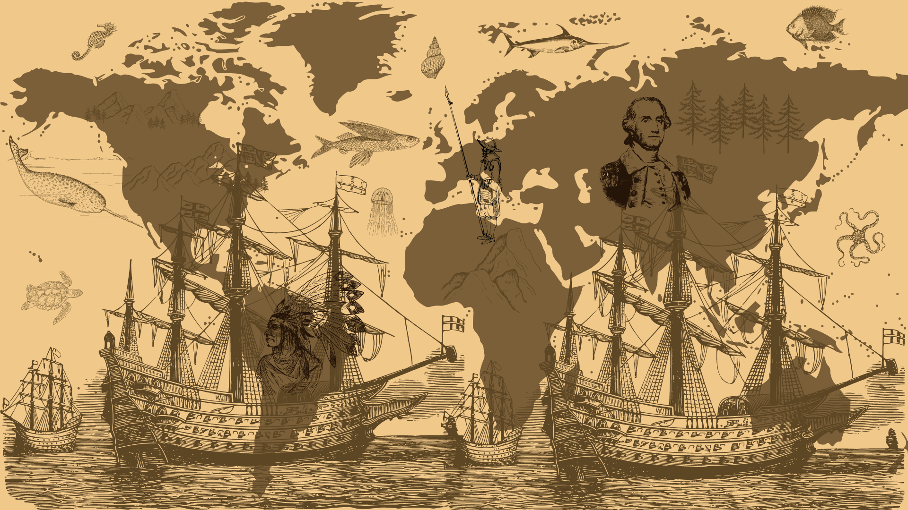
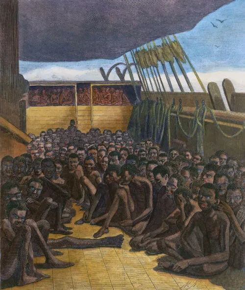

A história do basil não tem um marco inicial bem definido. Não obstante, tradicionalmete, existe uma datação recorrente sobre a chegada dos portugueses com Pedro Alváres Cabral.
Em 22 de abril de 1500 á região costeira de onde é a Bahia.
Seria esse então o``Descobrimento do Brasil``. Há evidências da presença de humanos no Brasil há pelo menos 12 mil anos. Cerca de três grandes grupos de seres humanos primitivos ocuparam o Brasil, como os caçadores-coletores, os sambaquis e os povos agricultores.
Em 1500, os portugueses se deram conta que há terras no sul da linha do Equador e passaram a ocupar o território. Isto mudaria para sempre a vida dos povos indígenas, dos africanos e dos europeus.Os portugueses tinham como objetivo explorar as riquezas naturais do Brasil e o primeiro produto comercializado foi o pau-brasil. Depois, os portugueses transplantaram o cultivo da cana-de-açúcar, já praticado na Madeira, para as Américas. Para trabalhar nestas plantações, os indígenas foram escravizados.
Para estimular o povoamento do novo território foi criado o sistema de Capitanias Hereditárias. Assim, uma pessoa recebia a propriedade de uma grande extensão de terra e tinha como obrigação cuidar do território, evitando invasões e gerando lucros através do trabalho agrícola.
Em vista disso, um grupo de mineradores e intelectuais planejou destituir o governador e tomar o poder. Os planos, contudo, foram descobertos antes do dia combinado e os participantes foram presos.
Várias instituições foram criadas no Rio de Janeiro, como a Biblioteca Real, o Jardim Botânico, a Academia Militar. A fim de aumentar o status do Brasil, Dom João o elevou o território à categoria de Reino Unido em dezembro de 1815 e os brasileiros passaram a ter o direito de enviar seus próprios deputados para a corte de Lisboa.
A escravidão no Brasil teve início no século XVI, durante o período colonial. Constituiu na mão de obra forçada de homens e mulheres africanos. Essas pessoas foram retiradas a forças de muitos grupos éticos de quais faziam parte 
A escravidão no Brasil foi tão cruel e a quantidade de africanos que foram trazidos durante três séculos foi tão grande que a imagem do trabalhador escravo em nosso país associou-se com a cor de pele do africano. Um sintoma evidente do racismo que estava por trás da instituição da escravidão em nosso país.
A escravidão foi uma instituição que se estabeleceu no Brasil por volta da década de 1530. A escravidão no Brasil atendia á demanda dos portugueses por trabalhadores braçaise, nos seculos XVI e XVII isso esta relacionado com trabalhos. A partir de 1534, os portugueses implantaram as capitanias hereditárias, com isso, passaram a incentivar o cultivo de cana-de-açúcar e o desenvolvimento de engenhos para produzir açúcar. Como essa era uma atividade complexa e que necessitava de mão de obra, os portugueses encontraram na escravidão a saída para a falta de trabalhadores – já que eles próprios não queriam realizar o trabalho pesado. Assim, o primeiro grupo a sofrer com a escravização foram os indígenas.Os indígenas foram a principal mão de obra escrava dos portugueses até meados do século XVII, quando, então, começaram a ser superados em números pelos escravos africanos. Escravizar um indígena, em comparação com um africano, era muito mais acessível para os colonos portugueses, mas uma série de questões tornavam essa prática mais problemática.
A medida que a colonização do Brasil se desenvolveu, a necessidade por trabalhadores era tão grande que fez que esse comércio prosperasse em larga escala. O sucesso do tráfico negreiro está relacionado, dessa forma, com a necessidade da colônia por trabalhadores e esse negócio foi altamente lucrativo para os traficantes, assim como para a Coroa.